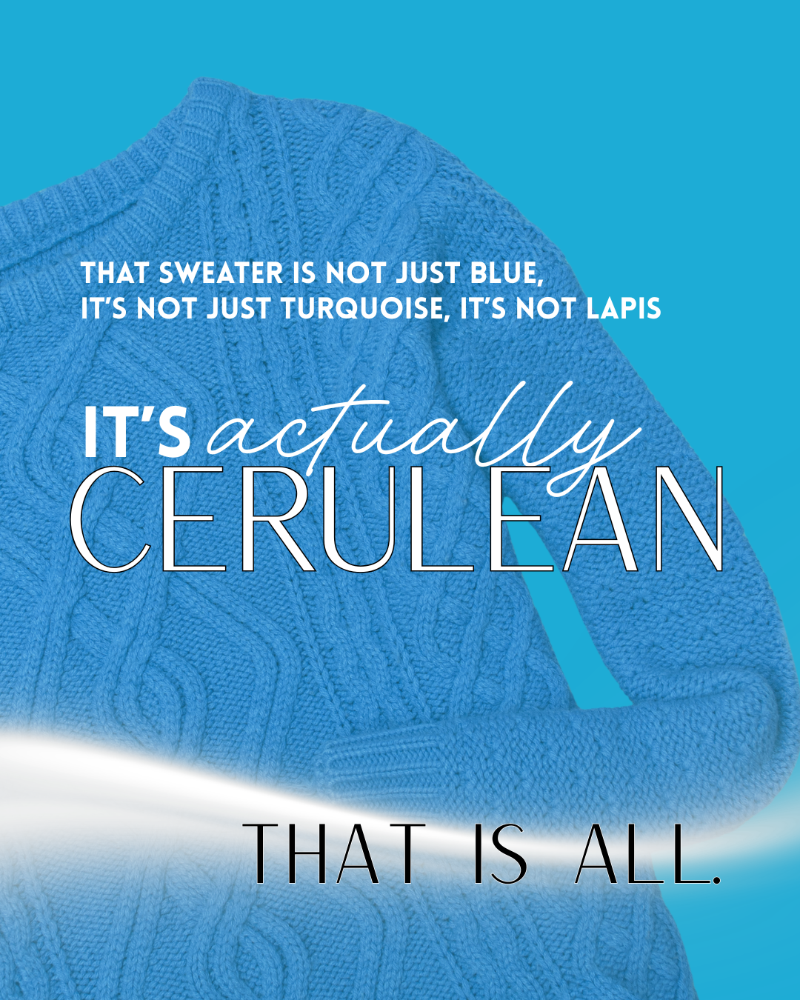

You know the scene. The Devil Wears Prada came out almost twenty years ago, so if you somehow missed it, that is its own surprise.
Andy smirks at two nearly identical belts that to her are the same, completely meaningless, until Miranda Priestly sets her straight. The lumpy blue sweater Andy threw on that morning was not a choice. It was cerulean. And that color was selected for her, years earlier, in rooms she never sat in, by people she will never meet. By the time it reached the clearance bin where Andy bought it, the decision had already been made. She thought she was expressing herself. She was wearing the end of someone else's sentence.
That scene is the clearest explanation of AI recommendation I have ever found.

The new Miranda
For decades, the discovery decision belonged to the customer, with a nudge. A billboard on I-26. A wrapped van in the school pickup line. A radio spot. The business spent money to put itself in front of a human, and the human decided.
That model is quietly ending. Look at what Google already did. The search results that ran the local economy for twenty years are being reshaped at the top by AI Overviews and AI Mode, an answer written by a model instead of ten blue links you scroll through yourself. Google has not flipped AI Mode on as the default for everyone, but it is steadily moving the search interface toward AI-generated answers, follow-up questions, and fewer traditional click paths. When someone asks ChatGPT, Claude, Gemini, or Perplexity for "the best HVAC company near me" or "a trustworthy bookkeeper in Charleston," they are already living further into that future. They are not handed twelve options to weigh, they are handed an answer, often one name, sometimes three. The model already made the call.
To be straight about it, plenty of customers still find a roofer the old way today, on a map, on a friend's recommendation, in a Facebook group. AI is not replacing every referral or billboard tomorrow. What it is doing is adding a new upstream filter, a layer that decides who even makes the list before the customer starts comparing. The dangerous part is not that the old ways die. It is that you cannot see when you are being filtered out. This is still early, but it is moving fast, and the platform that owns the most local searches on earth is the one pushing hardest. The window to be the chosen answer is open now, while most of your competitors are not even looking.
AI is the new Miranda, they decided what cerulean blue is, and the business owner never even saw the notes about the meeting.
This is the part that should make every owner sit up. You can spend twenty thousand dollars wrapping vans and buying billboards, and if the model does not select you, you are influencing the wrong decision-maker. You are buying eyeballs for a choice the customer no longer makes alone.
Mention is not selection
Here is the trap most people fall into, including most agencies.
They check whether the AI "knows" the business. They type the company name into ChatGPT, see it describe the business correctly, and call it a win. That is being mentioned. It is the equivalent of Miranda knowing your label exists.
Selection is different. Selection is the model reaching for you, unprompted, when a real customer asks a real buying question and never says your name. "Best wedding florist on Johns Island." "Who should I use for a roof inspection in Mount Pleasant." That is the moment that sends revenue. And it is a completely separate event from being known.
This is the whole reason the ARO Index exists. It does not measure whether you got mentioned at the party. It measures whether you are the one the model hands people before they know they had a choice. Profound proved the enterprise version of this idea, a public AI search leaderboard for major brands and industries. The ARO Index brings that same public-score concept down to Main Street, live, by city and category, across the four answer engines we track: ChatGPT, Claude, Gemini, and Perplexity.
You are not stuck with the blue
Now the part that matters for anyone trying to grow.
The cerulean story sounds fatalistic. The decision is made upstream, you are just wearing it, game over. But there is a person in that story with real power, and it is not Miranda. It is the designer. Someone, three seasons earlier, put that exact cerulean on a runway and made the case for it, and Miranda only ratified it.
In AI recommendation, that designer role is open. The models are not deciding what to pick out of thin air. They are reading the web, the structure of your site, the clarity of your services, the questions you answer, the signals you send. Right now, most businesses are sending the model nothing legible. They are handing it a lumpy sweater and hoping.
This is the work, and it is worth being honest about what it is. No one can promise a model picks you every time. The models are black boxes and they shift. What you can do is stop leaving it to chance. You can shape the inputs the model actually reads, so that when a customer asks the buying question, your business is the clean, obvious, well-signaled answer instead of the one the model has no reason to trust. You move the odds. The designer did not force Miranda's hand either. She made the case so well that the yes became obvious. That is what TaG Makes does. ARO is the measurement. TaG Makes, or any capable agency, is the one who gets cerulean onto the runway.
What this means for owners and agencies
For owners, the message is short: AI is picking the cerulean right now, with or without you. Your competitor down the road might already be the default answer in your category, and you would have no way of knowing, because the customer never told you they asked. The first move is not more ad spend. It is finding out whether the model picks you at all.
For agencies, this is the conversation your clients need to start having with you. They are still asking for the things that buy human attention. The smart play is to get ahead of the shift and show them where they actually stand inside the models, then fix it. The ones who own this category in their market will own it for years. The designers, not the shoppers.
The one number to start with
You do not need to overhaul anything to begin. You need to know where you stand.
An ARO audit runs your business through the four answer engines we track, asks the real buying questions a customer would ask, and reports back: does the model select you, how often, in what position, and against whom. The audit does not create your score. It reveals it. The cerulean was already chosen, and we are just turning on the lights so you can see it.
Three seasons ago, a color got picked, and you have been wearing it ever since. The only question worth asking now is simple: when the model reaches for an answer in your category, is it reaching for you?
If you do not know, that is the place to start. Run an ARO audit and find out whether the model picks you, how often, and against whom. You cannot change the answer until you can see it.
Therese Grittner is an AI recommendation researcher and the founder of the ARO Index, the live public leaderboard tracking which local businesses AI models actually select. Her consultancy, TaG Makes, helps businesses act on what the research reveals. ARO is the measurement. TaG Makes is the fix.